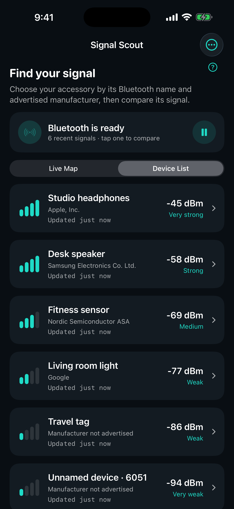

Check that it can broadcast
Your accessory must be powered on and advertising Bluetooth Low Energy. If you can access it, open the case or wake it. If it is silent, Signal Scout cannot detect it.
FREE BLUETOOTH FINDER FOR IPHONE
Signal Scout is a free Bluetooth Low Energy (BLE) finder for iPhone. It helps you search for nearby, actively broadcasting accessories by comparing signal-strength trends as you move.
See the device name and advertised manufacturer when available, then compare readings in the map or list. Use it for accessories you own or have permission to locate.
Available on the App Store · iPhone with iOS 17.0 or later

FROM SIGNAL TO NEXT STEP
Your accessory must be powered on and advertising Bluetooth Low Energy. If you can access it, open the case or wake it. If it is silent, Signal Scout cannot detect it.
Look for the Bluetooth name and advertised manufacturer. When details are missing or generic, bring an accessory you control close and compare the signal that strengthens.
Take a few slow steps, keep the phone oriented the same way, and wait for the smoothed trend before trying another position.
A stronger signal alone does not identify your item. Nearby accessories may appear too. Read the step-by-step iPhone guide.
READ THE CLUE CORRECTLY
On the map, closer to the center means stronger signal strength. A dot's angle is just visual spacing; it is not a direction to walk.
In the list, −50 dBm is stronger than −80 dBm. Walls, reflections, orientation, and an accessory's transmit power can affect either reading.
Understand RSSI and signal trendsBEFORE YOU START
Visibility varies by accessory and state. Signal Scout cannot guarantee discovery, identify owners, or locate a powered-off item. It does not replace a manufacturer's finding network.
ON YOUR PHONE
Bluetooth scanning and analysis run locally. Device names and manufacturer identifiers are processed in memory on your phone. Signal Scout does not request location or upload signal observations.
BLUETOOTH FINDER GUIDES
A practical search routine for nearby accessories that are still broadcasting.
Check permissions, scan state, battery, and accessory compatibility.
Learn what dBm readings mean and how to compare them while searching.
COMMON QUESTIONS
Signal Scout is a free Bluetooth Low Energy finder for iPhone. It shows nearby broadcasting devices and helps you compare signal-strength trends while searching. It runs on iOS 17.0 or later and processes Bluetooth observations on your phone.
It can help you compare signals from headphones or earbuds that actively advertise Bluetooth Low Energy and are visible to iOS. Some stop advertising while connected, asleep, or in their case. Discovery is not guaranteed.
No. A device that is powered off or no longer broadcasting does not provide a signal for Signal Scout to measure. Check the accessory maker’s finding service for any supported last-known location or finding-network features.
Signal Scout displays the Bluetooth name supplied by the advertisement or iOS, and resolves the company identifier in manufacturer data when available. Some devices omit these fields. Missing details are labeled clearly rather than guessed.
No. RSSI is approximate signal strength, not a measured distance or compass bearing. Dot angles separate the signals visually. Use the trend to compare positions, not as turn-by-turn navigation. Learn how to interpret RSSI.
Yes. Every feature is free, without a subscription, account, or time limit. Download Signal Scout from the App Store.
Signal Scout does not request location permission or upload Bluetooth observations. Scanning and analysis run on your phone; device names, manufacturer information, and signal readings stay in memory. The app has no analytics or advertising SDK. Read the privacy policy.
Check Bluetooth and the app’s Bluetooth permission, make sure scanning is running, and test with a nearby accessory you can wake. Follow the Bluetooth finder troubleshooting guide.
SIGNAL SCOUT AT A GLANCE